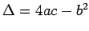
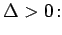
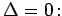

Kurve 3. Ordnung, Typ II
Die Funktion
beschreibt eine Kurve 3. Ordnung, die symmetrisch zu der vertikalen Geraden bei verläuft und die die x-Achse zur Asymptote hat.
Ihr Verhalten hängt von den Vorzeichen von a und  ab. Von den zwei Fällen a > 0 und a < 0 wird hier nur der erste betrachtet, da der zweite durch Spiegelung von an der x-Achse erhalten werden kann.
- a) Fall 
- Die Funktion ist für beliebiges x positiv und stetig und wächst von 0 bis zum Maximum, um dann wieder gegen 0 zu fallen. Das Maximum A liegt bei die Wendepunkte B und C liegen bei die zugehörigen Tangentensteigungen (Richtungskoeffizienten) berechnen sich zu
- b) Fall 
- Die Funktion ist für beliebiges x positiv, wächst von 0 bis
 , besitzt bei
, besitzt bei  eine Unstetigkeitsstelle mit
eine Unstetigkeitsstelle mit  und nimmt von hier wieder auf 0 ab.
und nimmt von hier wieder auf 0 ab.
- c) Fall
- Die Funktion wächst von 0 bis , springt an der Unstetigkeitsstelle auf
 , um von hier über ein Maximum wieder nach
, um von hier über ein Maximum wieder nach  zu verlaufen, von wo es einen zweiten Sprung nach
zu verlaufen, von wo es einen zweiten Sprung nach  gibt, auf den schließlich ein Abfall gegen 0 folgt. Das Maximum A liegt bei ; die Unstetigkeitsstellen liegen bei .
gibt, auf den schließlich ein Abfall gegen 0 folgt. Das Maximum A liegt bei ; die Unstetigkeitsstellen liegen bei .